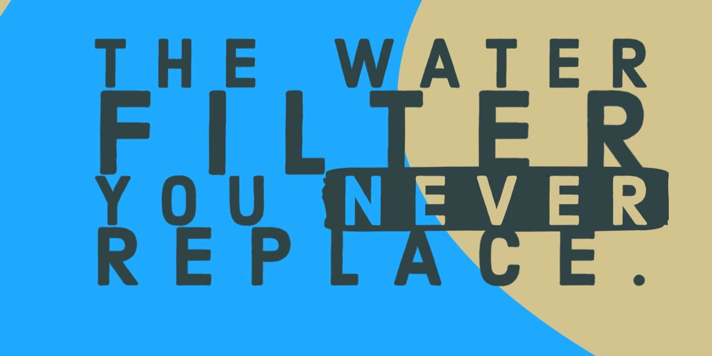
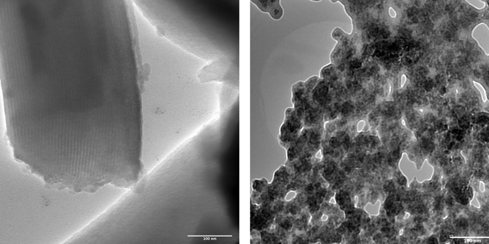
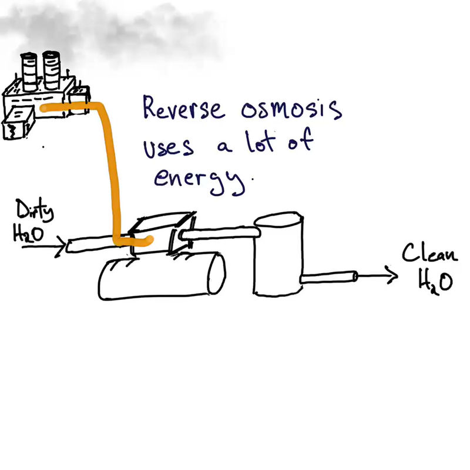
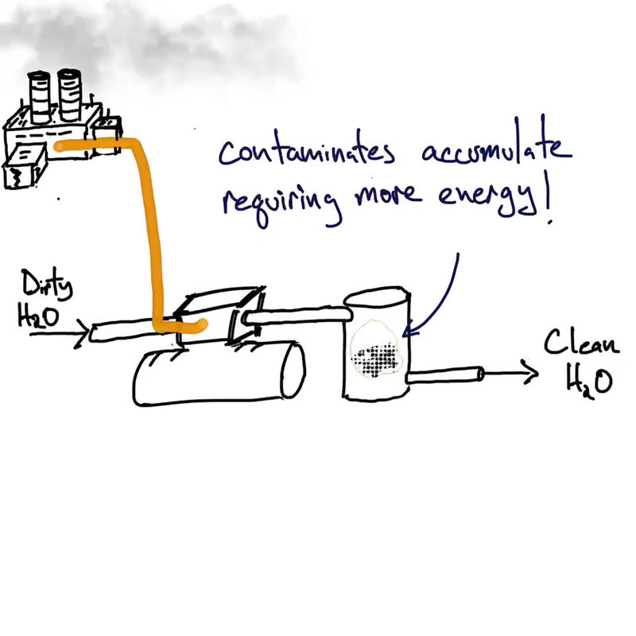
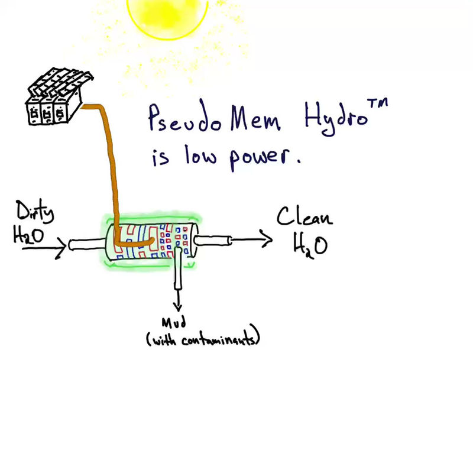
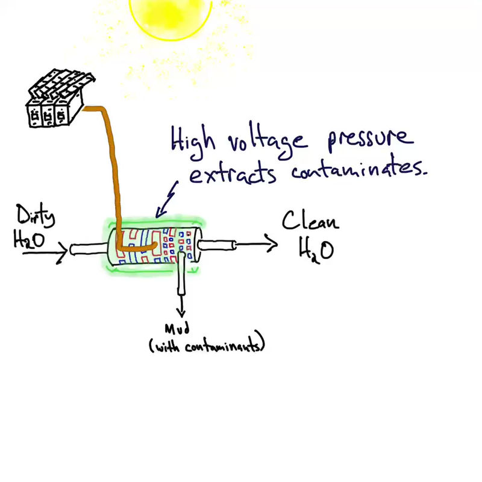
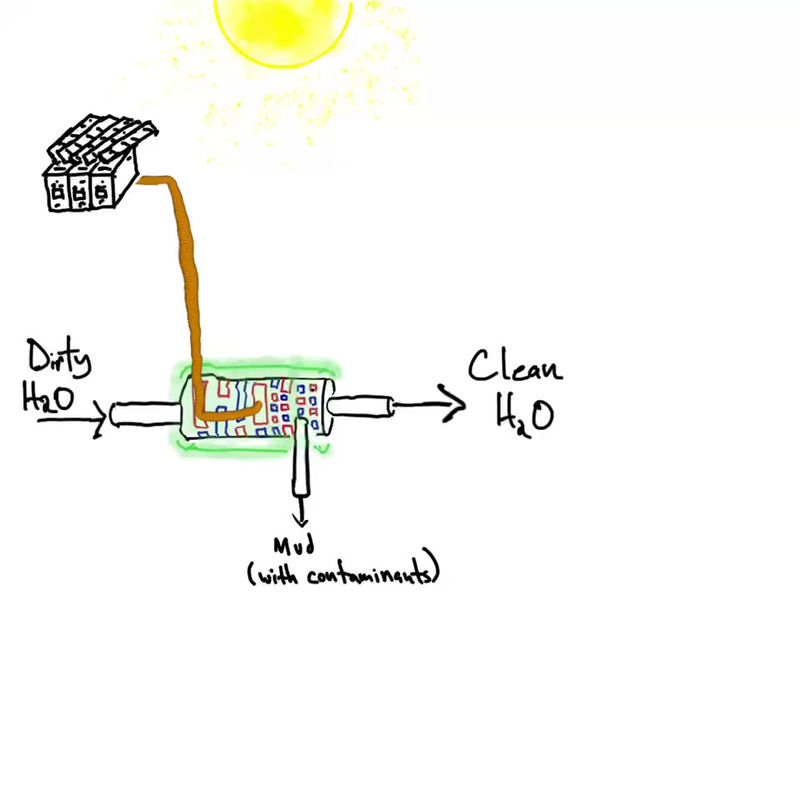

Water Purification Solution
With our first application of ChemiPattern™ Technology, PseudoMem Hydro™, we will improve the resilience of vulnerable communities with our low-power solution for water-stressed areas. These communities frequently experience water shortage emergencies amid increasing demand pressures and dwindling resources. Industrial water treatment is energy intensive, requires high-pressure reverse osmosis. Reverse osmosis (RO) uses large amounts of electricity. The energy to purify 1000 gallons of water with RO is equivalent to running a refrigerator for 17 days, making RO unfeasible for much of the remote world. This limitation is the same reason ocean water cannot be purified on an economical scale. PseudoMem Hydro is an inexpensive low-energy solution for water purification.


The Problem


The Solution


